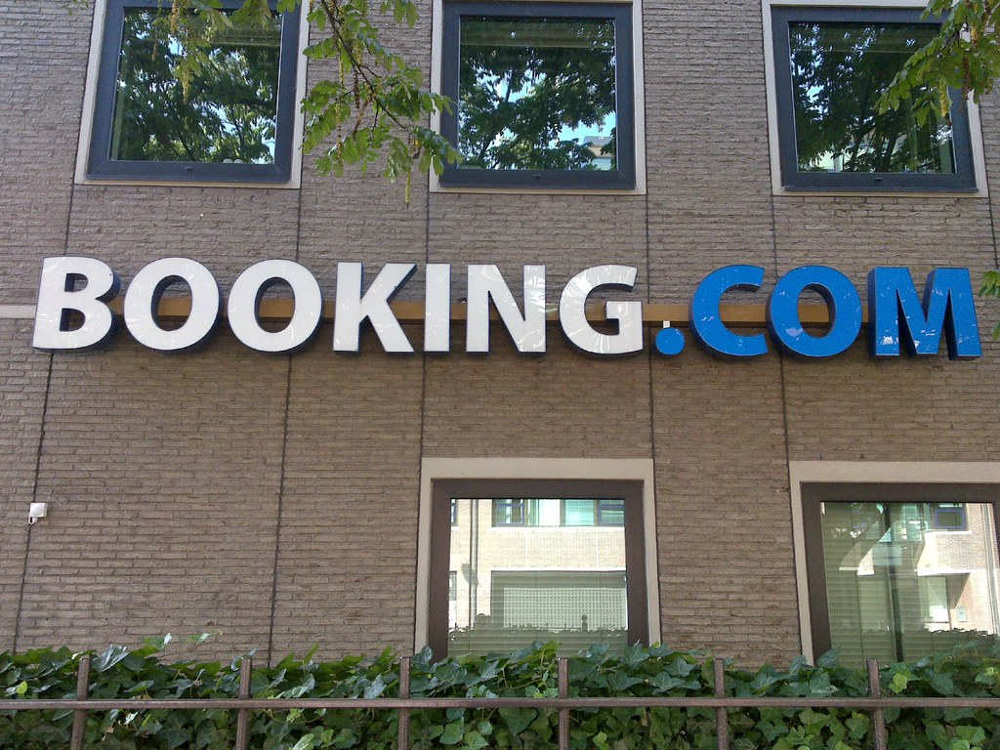

Qué es y cómo funciona Booking: Tu guía completa para reservar alojamiento

Cuando se trata de planificar un viaje, encontrar el alojamiento adecuado es una de las principales preocupaciones de los viajeros. Booking.com se ha convertido en una herramienta esencial en la industria del turismo al ofrecer una amplia selección de alojamientos en todo el mundo. En este artículo, exploraremos qué es Booking, cómo funciona y cómo puedes utilizarlo para reservar el alojamiento perfecto para tu próximo viaje.
¿Qué es Booking?
Booking.com es una plataforma de reserva de alojamiento en línea fundada en 1996 en los Países Bajos. Desde entonces, se ha expandido globalmente y se ha convertido en uno de los sitios web más populares para buscar y reservar alojamiento en todo el mundo. La plataforma cuenta con una amplia gama de opciones de alojamiento, que van desde hoteles y apartamentos hasta casas vacacionales y albergues.
Cómo funciona Booking:
- Búsqueda y filtrado de alojamiento: Al ingresar a la página de inicio de Booking, puedes comenzar tu búsqueda de alojamiento ingresando el destino, las fechas de tu estadía y el número de huéspedes. La plataforma mostrará una lista de opciones disponibles que se ajusten a tus criterios.
- Filtros y opciones de búsqueda avanzada: Para refinar tu búsqueda, Booking ofrece una variedad de filtros y opciones de búsqueda avanzada. Puedes filtrar por precio, categoría de alojamiento, servicios ofrecidos, ubicación y más. Esto te permite encontrar el alojamiento que se adapte mejor a tus necesidades y preferencias.
- Información detallada del alojamiento: Cada alojamiento listado en Booking cuenta con una página de detalles que proporciona información detallada sobre las instalaciones, servicios, comodidades y políticas del lugar. También encontrarás fotografías del alojamiento y reseñas de huéspedes anteriores para ayudarte a tomar una decisión informada.
- Reserva y confirmación: Una vez que hayas seleccionado el alojamiento deseado, puedes proceder a hacer la reserva. Booking te guiará a través del proceso de reserva, donde deberás proporcionar tus datos personales y los detalles de pago. Una vez completada la reserva, recibirás una confirmación por correo electrónico con los detalles de la reserva y los datos de contacto del alojamiento.
- Atención al cliente y soporte: Booking cuenta con un equipo de atención al cliente disponible las 24 horas para brindar asistencia en caso de preguntas, cambios en la reserva o problemas durante tu estadía. Puedes comunicarte con ellos a través de la plataforma o por teléfono.
- Cancelaciones y políticas de reembolso: Antes de reservar, es importante leer y comprender las políticas de cancelación y reembolso del alojamiento. Cada alojamiento tiene sus propias políticas, que varían desde la cancelación gratuita hasta condiciones más restrictivas. Asegúrate de revisar estas políticas antes de confirmar tu reserva.
Cómo Booking ha cambiado la forma de reservar alojamiento:
- Mayor accesibilidad y opciones: Booking ha democratizado la reserva de alojamiento al proporcionar una amplia selección de opciones en diferentes destinos alrededor del mundo. Los viajeros ahora tienen acceso a una variedad de alojamientos, desde hoteles de lujo hasta apartamentos boutique y casas vacacionales.
- Comentarios y reseñas de huéspedes: Una de las características más destacadas de Booking es la capacidad de leer comentarios y reseñas de huéspedes anteriores. Esto brinda a los viajeros una visión honesta y real de la calidad y la experiencia del alojamiento antes de realizar una reserva.
- Comparación de precios y ofertas: Booking permite a los usuarios comparar precios y ofertas de diferentes alojamientos en un solo lugar. Esto facilita la búsqueda del mejor precio y las mejores ofertas disponibles en el mercado.
- Flexibilidad en la reserva: Booking ofrece opciones flexibles de reserva, lo que significa que puedes encontrar alojamientos con políticas de cancelación más flexibles. Esto brinda mayor tranquilidad a los viajeros en caso de cambios de planes o imprevistos.
- Programa de fidelidad: Booking cuenta con un programa de fidelidad llamado «Genius», que ofrece beneficios exclusivos a los clientes habituales, como descuentos adicionales, servicios especiales y upgrades de habitación.
Conclusión:
Booking ha revolucionado la forma en que reservamos alojamiento al proporcionar una plataforma en línea fácil de usar con una amplia selección de opciones y una gran cantidad de información detallada. Su impacto en la industria del turismo ha sido significativo, ofreciendo mayor accesibilidad, opciones personalizadas y herramientas de comparación de precios. Como viajero, Booking te brinda la posibilidad de encontrar el alojamiento perfecto para tu próximo viaje y disfrutar de una experiencia de reserva conveniente y segura.